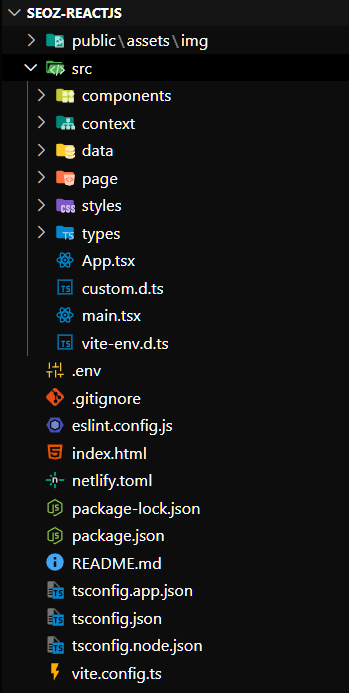
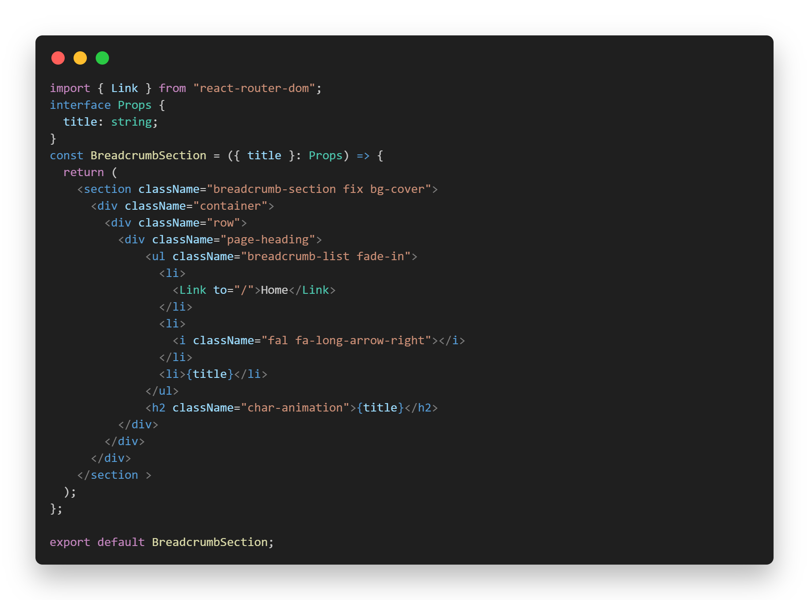
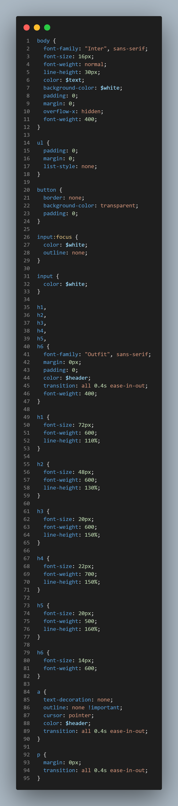
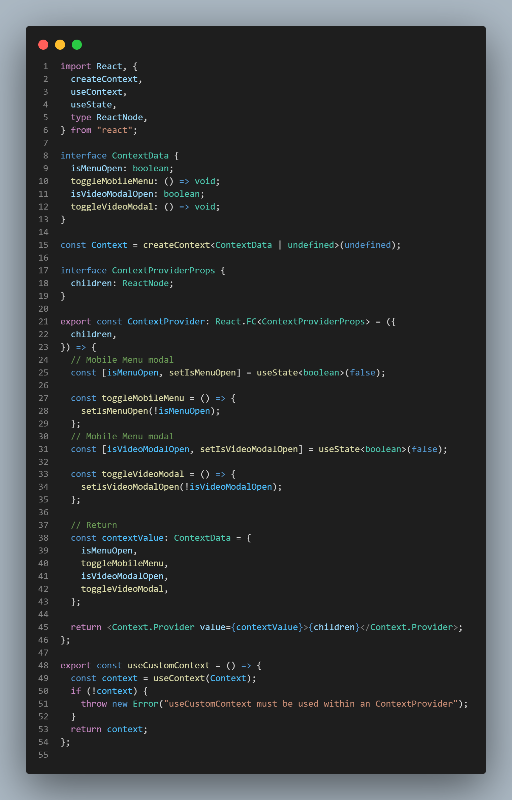
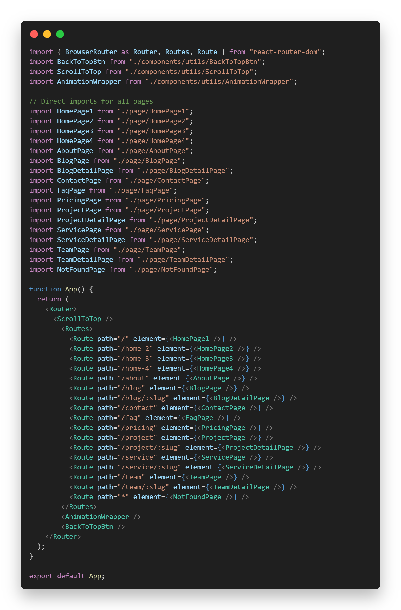
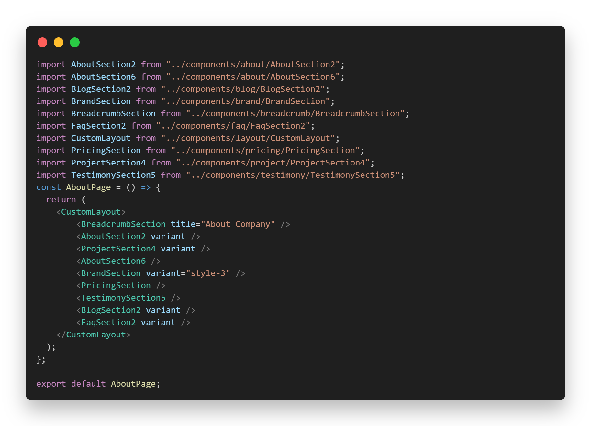

© Copyright preoiT .
Created : 29 July 2025
Last Update : 29 July 2025
By :
preoiT
Email : preoitinfo@gmail.com
Thank you for purchasing our **Seoz** - SEO & Digital Marketing
Agency React.js Template!
This document provides a comprehensive guide to setting up,
understanding, and customizing the template. It covers the file
structure, how to configure settings, work with components and
styles, manage state, deploy your project, and find support.
We've built this template using modern React.js features and
best practices to provide a performant and developer-friendly
experience.
If you have any questions or encounter any issues, please don't
hesitate to reach out for support.
Before you begin working with the Seoz React.js template, ensure you have the following software installed on your system:
npm install -g yarnnpm install -g pnpmFollow these simple steps to get the template running on your local machine:
cd path/to/your/main_filenpm installyarn installpnpm installThis will install all the necessary libraries and packages listed in the `package.json` file.
VITE_APP_BASE_PATH=/npm run devyarn devpnpm devYou are now ready to start customizing the template!
This template follows a standard React project structure, often used with build tools like Vite, making it straightforward to understand and modify. All files are logically organized for a smooth development experience.
After setting up your project, you'll find the following files and folders in the root:
/src: This is the heart of your application,
containing all your React source code.
/public: This directory holds static assets such as
images, fonts, and any other files that should be served
directly by the browser.
.env: Environment variables file used to store
sensitive or environment-specific values (e.g., API keys, base
URLs).
.gitignore: Specifies files and directories that
Git should intentionally ignore in your version control.
index.html: The main HTML entry point for your
React application. Vite uses this to inject your React app.
package-lock.json or yarn.lock or
pnpm-lock.yaml: These files lock down the specific
versions of your project's dependencies.
package.json: This file lists your project's
dependencies, scripts for running and building your app, and
other project metadata.
README.md: A markdown file containing general
information about your project, often including setup
instructions.
tsconfig.json: If you're using TypeScript (as
indicated by some of your files), this file configures your
TypeScript compiler options.
vite-env.d.ts: TypeScript declaration file for
Vite's environment variables.
vite.config.ts or vite.config.js: This
is Vite's configuration file, where you can customize build
options, server settings, and more.
/src Folder:This is where the majority of your application logic and UI components will reside. Common subdirectories include:
/components: This folder typically houses your
reusable React components, which are the building blocks of your
user interface.
/context: If you're using the React Context API for
managing global state, related files will likely be here.
/data: This might contain static data or mock data
used within your application.
/pages: In many React projects (though not strictly
enforced by Vite like Next.js), this folder can contain your
top-level components that represent different views or screens
of your application. With React Router or similar libraries,
components in this folder often become your routed pages.
/styles or /scss: This folder is where
you'll keep your SCSS, or other styling files.
/types: If you're using TypeScript, this folder
will contain your custom type definitions and interfaces to
ensure type safety.
App.tsx or App.jsx: This is often the
root component of your application, which renders other
components and sets up the overall structure.
custom.d.ts: A custom TypeScript declaration file
for any global type definitions specific to your project.
main.tsx or main.jsx: This is the
entry point that renders your root App component
into the DOM, usually targeting an element in your
index.html.
/components**: Components in this folder are
designed to be modular and reusable across your application.
You'll build your UI by composing these components together
within your pages or other components.
/public**: Static assets placed here are served
at the root of your application. For example, an image in
/public/assets/img/logo.png can be accessed in your
code as /assets/img/logo.png.
/data**: The files within this folder can hold
static information used in your application. This is useful for
things like lists of items, configuration data, or demo content.
/styles**: This is where you'll organize your
stylesheets. You might have global styles, component-specific
styles, or use SCSS-in-JS approaches depending on your
preference.
/types**: Using TypeScript types defined here
helps you catch potential errors early in development and makes
your codebase more maintainable by ensuring that data and
components use the expected structures.
App.tsx (or .jsx)**: This component
is typically the starting point for your application's UI. It
often includes routing setup (if you're using a router) and
provides the main structure for your application.
main.tsx (or .jsx)**: This script is
responsible for taking your root App component and
rendering it into the
<div id="root"></div> element in your
index.html file. It's the entry point that makes
your React application come alive in the browser.

Beyond the initial setup, here are key areas you might want to configure in your React Vite application:
The template likely includes some placeholder or demo data for
various UI elements. This data is often located within the
/src/data folder, potentially in files like
index.js, index.ts, or separate files
for different data sets.
To replace this with your own content, simply open the relevant
file(s) in the
/src/data
directory and modify the JavaScript objects and arrays. If you're
using TypeScript, ensure you adhere to the types defined in your
/src/types folder to maintain consistency.
The vite.config.ts (or vite.config.js)
file in the root directory is where you configure Vite's behavior.
This includes settings for the development server (like port and
proxying), build optimizations, handling static assets, and
integrating plugins.
Refer to the official Vite documentation for a comprehensive overview of the available configuration options to tailor your build process and development environment.
Environment variables are crucial for managing configuration that varies between different environments (e.g., development, production) or for sensitive information like API keys.
Create a .env.local file in the root of your project
to define your local environment variables. For production
variables, you might use .env.production, and so on.
Vite automatically loads variables from these files. To access
them in your code, use
import.meta.env.YOUR_VARIABLE_NAME. For variables
that should be exposed to the browser, they need to be prefixed
with VITE_ in your .env files.
# Example .env.local file
VITE_API_URL=https://your-api-url.com/api
SERVER_SECRET_KEY=your_server_secret # Not exposed to the browser
VITE_APP_TITLE=My Awesome App # Exposed to the browser
Access these variables in your code like this:
console.log(import.meta.env.VITE_API_URL);
// For server-side only variables (not prefixed with VITE_), you might access them
// via process.env if your server-side rendering or API routes are set up to handle them.
// However, in a purely client-side Vite app, focus on VITE_ prefixed variables.
console.log(import.meta.env.VITE_APP_TITLE);
This template leverages modular and reusable React components,
carefully organized within the
/src/components directory to ensure a clean and
maintainable codebase.
Within /src/components, you'll often find
sub-directories that group components by their functionality or
the specific area of the application they serve (e.g.,
Header, Footer, common,
ui, or perhaps feature-specific folders).
The primary views or screens of your application are built as page
components, which you've clearly organized within the
/src/pages directory. Your App.tsx file
acts as the central routing configuration, utilizing the
<BrowserRouter>, <Routes>,
and <Route> components from the
react-router-dom library. This setup maps specific
URL paths (like /, /about,
/course/:slug) to their corresponding page components
(e.g., HomePage1, AboutPage,
CourseDetailPage).
These page components, located in /src/pages, then
import and compose the smaller, reusable building blocks from the
/src/components directory to construct the user
interface. Data is passed down to these components via
props, allowing for dynamic content rendering. By
inspecting a component's code, you can understand the props it
expects and how it utilizes data, potentially sourced from files
in /src/data.
To customize the template, you can either modify the existing
components in
/src/components or create new ones. Similarly, you
can add or adjust the page components and their corresponding
routes within /src/pages and App.tsx to
build the specific features and navigation of your application.

The template uses SCSS for styling. The SCSS files are located in
the
/src/styles folder.

The template utilizes React's Context API, managed within the
/src/context folder (specifically
context.tsx), for global state management.
This approach helps avoid "prop drilling" (passing props down through many nested components) by making certain state values and functions available directly to any component that needs them, regardless of how deep they are in the component tree.
The context.tsx file contains the provider component
and defines the state and functions shared across the app. To
access this shared state or functions within any component, you'll
use a custom hook provided by the context, likely named
useCustomContext (as mentioned).
// Example of consuming context in a component
import { useCustomContext } from '../context/context'; // Adjust import path if needed
const MyComponent = () => {
const { sharedState, updateStateFunction } = useCustomContext();
// Use sharedState and updateStateFunction here
return (
<div>
<p>Shared State Value: {sharedState}</p>
<button onClick={() => updateStateFunction('new value')}>Update State</button>
</div>
);
};
Review the context.tsx file for details on what state
is managed and the available functions. The functions are
documented within the file for your better understanding.

In this React project, you're using React Router DOM for navigation, which provides a flexible way to define routes within your application. Unlike Next.js's file-system routing, React Router DOM uses explicit configuration within your code.
As seen in your App.tsx file, the
<BrowserRouter> component enables client-side
routing. Inside it, the <Routes> component acts
as a container for your individual
<Route> definitions.
Each <Route> component specifies a
path (the URL route) and an
element
(the React component to render when that route is matched). For
example:
<Route path="/" element={<HomePage1 />} />
<Route path="/home-2" element={<HomePage2 />} />
<Route path="/home-3" element={<HomePage3 />} />
Here, when a user navigates to the root path (/), the
HomePage1 component will be rendered. Similarly,
/about renders AboutPage. The
/course/:slug route demonstrates dynamic routing,
where :slug is a parameter that can be accessed
within the CourseDetailPage component to fetch and
display specific course information.
Your page components, which represent the different views of your
application (like
HomePage1, AboutPage,
CoursePage, etc.), are organized within the
/src/pages
directory. These components are responsible for fetching data,
managing their own state, and rendering the necessary UI, often by
importing and composing smaller, reusable components from the
/src/components directory.
To add new pages or modify existing routes, you'll primarily work
within your
App.tsx file to define the
<Route> configurations and create or update the
corresponding page components in the
/src/pages directory.


In the project directory, you can run the following standard React.js scripts using your package manager:
npm run dev or yarn dev or
pnpm dev
Runs the application in development mode with hot-reloading. Opens [http://localhost:5173](http://localhost:5173) by default.
npm run build or yarn build or
pnpm build
Builds the application for production to the
dist folder. Optimizes the build for the best
performance.
npm run start or yarn start or
pnpm start
Starts the production server. You must run
npm run build first. Opens
[http://localhost:5173](http://localhost:5173) by default.
npm run lint or yarn lint or
pnpm lint
Runs ESLint to check for code quality and potential errors.
Consult the package.json file for any additional
custom scripts that might be included.
Here are some common customization tasks you might perform:
The main color palette and typography settings are defined using
CSS variables. Look for files like
/src/styles/scss/_variables.scss in the :root (path
may vary slightly) to modify global color schemes, font families,
font sizes, etc.
The template leverages environment variables to manage the base path for images and other static assets, allowing for flexible deployment and content management.
Your Image component currently uses
VITE_APP_BASE_PATH from your .env file
to construct the full image source:
// src/components/Image.tsx (or similar, depending on your file structure)
interface Props {
src: string; // The relative path to the image, e.g., "assets/img/hero.jpg"
alt: string;
width: number;
height: number;
className?: string;
}
const Image = ({ src, alt, width, height, className }: Props) => {
const basePath = import.meta.env.VITE_APP_BASE_PATH; // This fetches the value from your .env
return (
<img
src={`${basePath}${src}`} // Combines the base path with the image's relative path
alt={alt}
className={className ? className : ""}
width={width}
height={height}
loading="lazy"
/>
);
};
export default Image;
To change where your images are loaded from, you'll modify the
VITE_APP_BASE_PATH
variable in your
.env file.
.env file**: This file should be in
the root directory of your project (the same directory as
package.json).
VITE_APP_BASE_PATH**:
http://localhost:5173/my-images/), you would
set:
VITE_APP_BASE_PATH=/my-images/VITE_APP_BASE_PATH=https://your-cdn.com/images/VITE_APP_BASE_PATH=https://api.yourdomain.com/assets/.env file, you **must** restart your
development server (npm run dev,
yarn dev, or pnpm dev) for the changes
to take effect.
VITE_. Do not change
VITE_APP_BASE_PATH to APP_BASE_PATH as
it will not be accessible in your component.
npm run build), Vite will statically
replace these import.meta.env references with the
values from your .env.production file (or
.env if no production-specific file exists). Ensure
your production environment variables are correctly configured.
This setup gives you the flexibility to easily switch between local development asset paths and production API endpoints or CDN URLs without modifying your component code.
As mentioned in the
Configuration section,
modify the data in /src/data/index.ts to change the
content displayed in various sections like courses, testimonials,
etc.
Customize the structure and appearance of individual sections or
UI elements by editing the relevant component files in the
/src/components folder.
Modify the SCSS files in /src/styles/scss to adjust
specific styles. Follow the existing SCSS structure and
methodology for consistency.
Deploying your React Vite application is a straightforward process. While Vercel is excellent for Next.js, there are many fantastic platforms well-suited for deploying modern front-end applications like yours.
Here are a few popular and recommended platforms for deploying your React Vite template:
npm run build or yarn build) and point
to the dist
folder as the output directory. Remember to also set any
necessary **environment variables** (like
VITE_APP_BASE_PATH) within Vercel's project
settings.
https://vercel.com/
npm run build (or yarn build) and set
the publish directory to dist. Any **environment
variables** (e.g., VITE_APP_BASE_PATH) needed for
your application should be added in Netlify's build settings.
https://www.netlify.com/
npm run build or
yarn build), you can deploy by simply running
surge ./dist in your terminal. Note that for Surge,
you might need to handle **environment variables** like
VITE_APP_BASE_PATH by ensuring they are correctly
resolved during the build step, as Surge primarily hosts static
files.
https://surge.sh/
gh-pages) or a /docs folder in your
main branch. For **environment variables** such as
VITE_APP_BASE_PATH, ensure they are correctly set
in your CI/CD workflow (e.g., GitHub Actions) that builds and
deploys to GitHub Pages.
https://pages.github.com/
VITE_APP_BASE_PATH through
Firebase's project configuration or by ensuring they are
embedded during your Vite build process.
https://firebase.google.com/products/hosting
While the specifics vary by platform, here are the general steps you'll typically follow:
package.json under the build script
(e.g., npm run build or yarn build).
This command will generate an optimized production build of your
application, typically in a dist folder.
npm run build) and the output/publish directory
(usually dist). Crucially, you will also need to
configure any necessary **environment variables** (like
VITE_APP_BASE_PATH) on the hosting platform. This
ensures your application can correctly load assets, connect to
APIs, and more in the production environment.
For detailed instructions specific to your chosen hosting platform, please refer to their official documentation. Each platform has its own nuances and best practices for deploying React applications.
This template utilizes the following libraries, fonts, and assets:
Thank you for choosing our Seoz template! We strive to provide high-quality products and support.
If you have carefully read through this documentation and still have questions, encounter bugs, or need assistance with specific issues related to the template's code and features as advertised, please reach out to us via the ThemeForest support channel.
You can contact us through our profile page: preoiT on ThemeForest.
We aim to provide timely and helpful support to ensure you have a smooth experience using our template.